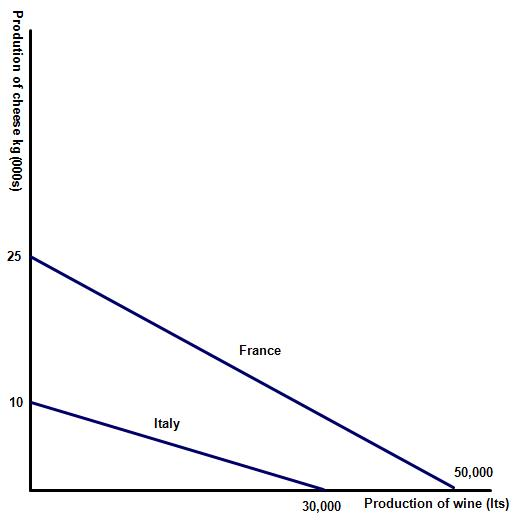
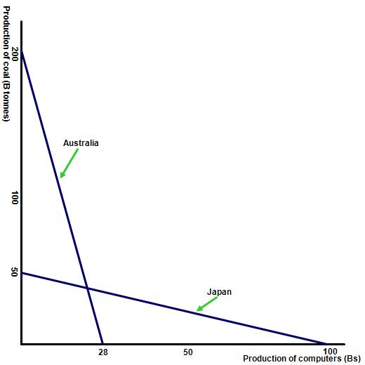
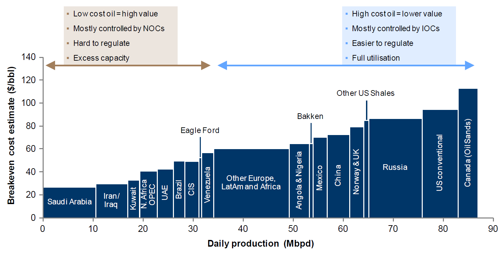

IB Docs (2) Team
IB Docs (2) Team
Absolute and comparative advantage (HL only)
Introduction
This page contains exercises on comparative and absolute advantage. These are paper three type in style and provide good practise for your classes. Students will often get the two terms confused and it is important to note that absolute advantage compares the ability of one country to produce a good or service over another nation while comparative advantage is a comparison of the different opportunity costs associated with the production of different products.
Enquiry question
What are absolute and comparative advantage?
Lesson time: 90 minutes
Lesson objectives:
Explain the theory of absolute and comparative advantage.
Explain, using a diagram, the gains from trade arising from a country’s absolute advantage in the production of a good.
Describe the sources of comparative advantage, including the differences between countries in factor endowments and the levels of technology.
Draw a diagram to show comparative advantage from a set of data.
Calculate opportunity costs from a set of data in order to identify comparative advantage.
Discuss the real-world relevance and limitations of the theory of comparative advantage, considering factors including the assumptions on which it rests, and the costs and benefits of specialisation (a full discussion must take into account arguments in favour and against free trade and protection)
Teacher notes:
1. Beginning activity - begin with the prezi and the opening question and then discuss this as a class. (Allow 5 minutes in total)
2. Processes - technical vocabulary - the students can learn the background information from the opening video on absolute and comparative advantage. (10 minutes)
3. Applying the theory - activities 2 - 6 are paper three in type. (30 minutes)
4. Applying the theory - activity 7, sources of advantage (10 minutes)
5. Developing the theory - activity 8 looks at the weaknesses of comparative advantage theory (10 minutes)
6. Reinforcement activity - activity 9 includes a paper two type question. (25 minutes)
Key term:
Absolute advantage - a nation enjoys an absolute advantage, over a different nation, when they are able to produce a good or service at a lower unit cost.
Comparative advantage - a nation enjoys a comparative advantage, over a different nation, when they are able to produce a good or service at a lower opportunity cost.
Opening question
Which good or service is your nation's highest value export? Watch the following presentation to find out the answer.
The activities on this page are available as a PDF file at: Absolute and comparative advantage
Absolute and comparative advantage theory
The following video explains the theory required for this topic. Use the information from the video to complete the activities which follow:
Activity 1: Absolute and comparative advantage examples
Start by looking at the following example and explain whether the two countries identified should trade with each other. France produces some of the world's finest wines and can produce high quality wine for only ϵ 5 per bottle. The same bottle costs Germany ϵ 8 per bottle to produce. By contrast Germany is one of the worlds great beer producers and can produce a litre of beer for just 70% of the cost of producing the same bottle in France.
So should they trade with each other?
The answer of course is yes. This is because both nations have an absolute advantage in producing one product. In other words both nations can produce a good more efficiently than the other and so it makes sense to specialise and then trade, rather than trying to produce both products.
Activity 2: Absolute advantage
Two trading nations, UK and Turkey, both produce tea and wheat. Turkey has a potential output of 4 billion kgs of wheat and 16 billion kgs of tea. The UK 20 billion kgs of wheat and 8 billion kgs of tea.
(a) Initially the governments of both nations decide to divert exactly 50% of their resources to the production of both products. Start by representing this on the following table, presuming that there are constant returns to scale:
| Country | Billion kgs of wheat | Billion kgs of tea |
| UK | 10 | 4 |
| Turkey | 2 | 8 |
| Total output | 12 | 12 |
(b) Both governments now decide to explore the possibility of specialising, diverting all of their resources to the production of just one product - and then trading with the other. Which product should both nations specialise in?
UK - wheat and Turkey tea.
| Country | Billion kgs of wheat | Billion kgs of tea |
| UK | 20 | 0 |
| Turkey | 0 | 16 |
| Total output | 20 | 16 |
| Country | Billion kgs of wheat | Billion kgs of tea | Total national output |
| UK | 12 | 8 | 20 |
| Turkey | 8 | 8 | 16 |
(e) State whether Turkey and the UK should trade with each other.
Yes because both nations enjoy an absolute advantage in the production of one product - the UK wheat (because they can produce the good at a lower unit cost than Turkey) and Turkey tea because they have an absolute advantage in that good.
Activity 3: Comparative advantage
Mexico, operating at full capacity, can produce either 5 billion kgs of tea or 15 billion kgs of wheat, while USA is capable of producing 20 billion Kgs of wheat or 30 billion Kgs of tea.
(a) Which nation has an absolute advantage at producing both products?
USA
(b) Which good are both nations more efficient at producing at?
USA - tea and Mexico wheat.
(c) Complete the following table, calculating the opportunity cost for each nation of producing both wheat and tea.
Potential production of wheat (B kgs) | Potential production of tea (B kgs) | Opportunity cost of producing wheat | Opportunity cost of producing tea | |
USA | 20 | 30 | 1.5 kgs of tea / 1 kg of wheat = 1.5 | 1 kgs of wheat / 1.5 kgs of tea = 0.67 |
Mexico | 15 | 5 | 1 / 3 = 0.33 | 3 |
Country | Kgs of wheat | Kgs of tea |
USA | 10 | 15 |
Mexico | 7.5 | 2.5 |
Total world output | 17.5 | 17.5 |
Country | Kgs of wheat | Kgs of tea | Total national output |
USA | 5 | 25 | 30 |
Mexico | 10 | 5 | 15 |
(f) Explain whether both nations have benefited from international trade.
Yes because the total output for USA has risen from 25 kg to 30 kg. Mexico has also benefited increasing national output from 10 Kgs to 15 Kgs.
Activity 4: short answer questions
Two countries, France and Italy produce both cheese and wine. France can produce a maximum 50,000 litres of wine in any year. If they instead divert those same resources to the production of cheese then they can produce 25,000 Kgs of the product. Italy by contrast is less efficient at producing both goods and services. Their maximum capacity levels are 30,000 litres of wine and just 10,000 Kgs of cheese.
(a) Illustrate the above on a PPF / PPC diagram.

(b) What is the opportunity cost of producing both cheese and wine for Italy and France?
The opportunity cost for France of producing 1 Lt of wine is the 0.5 Kgs of cheese that they are forced to give up. Their opportunity cost of producing cheese is 2 litres of wine. The opportunity cost for Italy of producing 1 Lt of wine is the 0.33 Kgs of cheese they are forced to forego. Their opportunity cost of producing 1 Kg of cheese is 3 Lts of wine.
(c) Would it be beneficial for both France and Italy to trade with each other? Explain your answer.
No because they both have a comparative advantage in the production of wine. Therefore, if they split their time 50/50 then France would make 12,500 cheese and 25,000 wine and Italy would make 5,000 cheese and 15,000 wine total production of 57,500 units of output which is more than if they specialised.
Activity 5
The following table shows two nations. Using all of their resources into the production of both cars and computers they can produce at the following output levels, assuming constant returns to scale:
| Country | Production of computers (000s) | Opportunity cost of producing 1000 computers | Production of cars (000s) | Opportunity cost of producing 1000 cars |
| France | 50 | 3 cars / 5 computers | 30 | 5 computers / 3 cars |
| Italy | 25 | 1.5 cars / 2.5 computers | 15 | 2.5 computers / 1.5 cars |
| Total output | 75 | - | 45 | - |
(a) Complete the table above showing the opportunity cost of producing both cars and computers.
(b) Should trade take place between France and Italy?
No because both countries produce each good at the same opportunity cost. In other words France has an absolute advantage in the production of both goods but neither country has a comparative advantage in either good.
Activity 6
Two nations, Australia and Japan are weighing up the mutual benefits of trade. Australia with its vast reserves of coal and energy has a maximum annual productive capacity of 200 billion tonnes of coal and 28 billion computers. By contrast Japan is well endowed with labour and capital and is able to produce 100 billion computers annually, but only 50 billion tonnes of coal.
1. Illustrate the above on a PPF diagram.

2. The following table represents two nations. If they dedicate half of their resources to the production of coal and computers their maximum potential output levels would be as follows:
| Country | Billion tonnes of coal | Billion computers |
| Australia | 100 | 14 |
| Japan | 25 | 50 |
| Total output | 125 | 64 |
After specialisation their output levels would be as follows:
| Country | Billion tonnes of coal | Billion computers |
| Australia | 200 | 0 |
| Japan | 0 | 100 |
| Total output | 200 | 100 |
Show the impact of trade between the two nations at an exchange rate 2 billion tonnes of coal to 1 billion computers. Presume that 100 billion tonnes of coal is exchanged.
| Country | Billion tonnes of coal | Billion computers |
| Australia | 100 | 50 |
| Japan | 100 | 50 |
| Total output | 200 | 100 |
3. Looking at the following table, which of the following nations has an absolute advantage in the production of oil?

The oil producing nations of the middle east have the largest absolute advantages of any of the countries above. That said oil is a basic necessity from many nations and so if the price rises above $ 110 a barrel then all of the nations in the table will enjoy an absolute advantage over non oil producers.
4. Which nations are the world's largest producers of the following goods and services:
i. cars
- China - 24,503,326 cars produced per year
- USA - 12,100,095
- Japan - 9,278,238
- Germany - 6,033,164
ii. financial services including banking
- USA
- China
- UK
- France.
iii. smart phones
- China
- Japan
- South Korea
- India.
iv. oil
- Saudi Arabia - 10,625,000 barrels of oil
- Russia - 10,254,000
- USA - 8,744,000
- Iraq - 4,836,000.
v. textiles and clothing
- China - $ 274 billion per year
- India - $ 40 billion per year
- Italy - $ 36 billion per year
- Germany - $ 35 billion per year.
Activity 7: Sources of comparative advantage
Using information from the following short video describe some of the reasons why nations might enjoy a comparative advantage.
Sources of comparative advantage:
Geography: e.g a small number of oil rich nations in the Middle east are able to produce oil and gas for a fraction of other oil producing nations, due to the ease with which the energy resource can be extracted from the land.
Labour: some nations posses a very large unskilled labour force and have enjoyed a comparative advantage in the production of labour intensive manufactured goods.
Capital: the Developed world has generally used their abundant supply of capital and well educated labour force to gain an advantage in the production of high quality technology goods as well as financial services.
Economies of scale: a comparative advantage gained as a result of specialisation.
Activity 8: Limitations of comparative advantage theory
Based on the information that you have learned in this lesson, describe some of the limitations of comparative advantage theory.
The theory presumes that each nation enjoys perfect knowledge of what to produce, when in reality this is not the case.
The theory presumes constant returns to scale in its calculations. For example it presumes that a nation can simply double its output of a good or service by focusing all of its resources on the production of one good or service.
The theory ignores that some of the advantages of international trade can be nullified by transport costs and / or trade barriers.
The model also presumes that the quality of goods and services is constant when in reality the quality (or perception of quality) differs between producing nations.
Lastly, the comparative advantage model is overly simplistic, containing just two products and two trading nations. In the real world trade is significantly more complex.
Activity 9: Link to the assessment (paper two type)
An example of paper two type questions:
Start by reading the following passage and then complete the following questions:
(a) i. Define economic growth. (line 1) [2 marks]
A rise in real GDP or economic activity over a period of time, typically one year or a quarter.
ii. Define inflation. (line 10) [2 marks]
A sustained rise in average or general prices over a period of time, usually one year.
iii. Calculate the nominal rate of economic growth between 2018 and 2019 and the rate of inflation for the same period? [3 marks]
GDP growth = 1.20 / 13.05 Trillion $ = 9.91% with inflation of 3%. Deduced from an annual real growth rate of 6.91%.
iv. Define comparative advantage. (line 17) [2 marks]
A nation enjoys a comparative advantage, over a different nation, when they are able to produce a good or service at a lower opportunity cost.
(b) Outline two benefits when a nation traded internationally. [4 marks]
Hint:
A nation that trades may enjoy the following benefits:
- a greater range of products to enjoy at lower prices
- greater competition which encourages domestic businesses to improve efficiency
- greater specialisation
- economies of scale
- as a source of acquiring foreign exchange.
(c) Explain why China's exports tend to be industrial products while many LEDCs export mainly primary products. [4 marks]
This question can be explained by the different sources of comparative advantage between nations. For instance China is well endowed with labour and capital, while many other LEDCs have very different factor endowments and little access to technology.
(d) Using extracts from the passage (included in the exam paper) and your knowledge of economics discuss the relevance and limitations of the theory of comparative advantage in determining whether a nation should specialise in the production of a small number of products. [15 marks]
Responses would need to consider a range of factors including the assumptions on which the theory of comparative advantage rests and a full discussion of the costs and benefits of specialisation. For example the arguments in favour of specialisation and trade include:
Key term to define - comparative advantage.
- consumers enjoy a greater range of products to enjoy at lower prices, for example China would be able to trade their surplus products and purchase the luxury goods that their consumers want.
- greater competition from overseas firms forces domestic businesses to improve efficiency or risk being driven out of business - it is unclear from the passage whether firms in China would be able to compete against imported products or not?
- a nation can enjoy the benefits of greater specialisation, for example the passage identifies China's comparative advantage lies in 'its virtually inexhaustible labour resource and the strong growth rate could last for many years'.
- winning access to a larger global market allows successful businesses to make further efficiency gains from increasing returns to scale.
- exporting goods provides a source of acquiring foreign exchange, with which to purchase the capital goods and raw materials that a nation needs for its own production.
On the other hand, the arguments against specialisation and free trade include:
- In economics the theory of comparative advantage presumes constant returns to scale in its calculations. For example it presumes that China can simply double its output of a good or service by focusing all of its resources on the production of one good or service. In reality a nation may not be able to do so.
- Other nations may not wish to purchase the manufactured products that it produces - China is not a full member of the WTO.
- In reality too, some of the advantages of international trade can be nullified by transport costs and / or trade barriers. Neither of which are factored into any calculations in the theory.
Responses would be expected to use extracts from the passage in order to reach the higher grade bands.
Responses for question (g) should be graded according to the following mark bands:
Marks | Level descriptor |
0 | The response is below the standards described below. |
1-3 | The response indicates little understanding of the demands of the question The response uses little relevant theory Little attempt is made to make use of the text/data. |
4-6 | The response indicates some understanding of the demands of the question The response makes limited use of comparative advantage theory. There is limited evaluation contained in the response The response makes limited use of the text/data to support their arguments. |
7-9 | The response indicates an understanding of the demands of the question Some relevant theory is used in the response The response contains some evaluation The response makes some use of the text/data. |
10-12 | The response indicates an understanding of the demands of the question The response uses relevant theory appropriately Evaluation is used appropriately There is appropriate use of the text/data. |
13-15 | The response indicates an understanding of the demands of the question The response makes effective use of relevant theory Evaluation is used effectively The response makes effective use of the text/data. |
 Twitter
Twitter
 Facebook
Facebook
 LinkedIn
LinkedIn